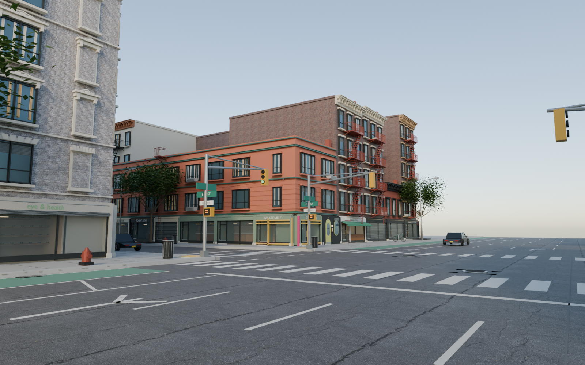

W A S D move · drag to look · Q E turn
Loading the reconstruction…

Try a browser with WebGL 2 enabled.
Walk or drive from East 7th to East 12th Street, between Second Avenue and Avenue A. The individually modeled First & 10th intersection remains the center, with ten connected blocks, the edge of Tompkins Square Park, and distinct church, theater and civic buildings.
The neighborhood combines OpenStreetMap with NYC building and parcel records, restores five missing buildings, and includes 411 additional buildings with photographic observations. Coverage ranges from a storefront to a full facade. Other buildings have estimated window layouts, materials and metalwork. This remains a photo-guided reconstruction. Detail and source coverage vary across the map.
First & 7th is the current detail study: five individual buildings across its four corners, including both Saifee buildings. Separate elevations, shop windows, seating, signs, plant displays and visible interior details follow accessible photographs. Across the neighborhood, 27 shops have individual exterior designs. Use the four corner buttons to inspect this intersection.
First & 7th was reviewed against accessible Google Street View images on September 10, 2026, mainly captured in April 2026. Closer west-side and Yubu views date to September 2024 and are partly obscured. These photographs guide authored geometry; their pixels are not included in the game. Dimensions, obscured surfaces, substituted lettering, painted artwork and unobserved interiors remain estimates. A dated visual comparison is not a surveyed 1:1 replica. Unconfirmed tenants elsewhere are left unnamed; trees and vehicles are illustrative.
Press M to search for a place or address, or choose a street on the map. Drive with W / S and A / D; Space brakes. Start at First Avenue & East 7th Street, facing north. R returns here in either mode. The outer streets mark the edge of this reconstruction.
Download 3D modelPhoto provenanceNeighborhood sources
Geometry: © OpenStreetMap contributors / ODbL. OSM snapshot: September 5, 2026. Supplemental footprints and roof heights: NYC Office of Technology and Innovation; parcel attributes: NYC Department of City Planning, PLUTO 26v2. Retrieval: September 6, 2026.
Photographs: Eden, Janine and Jim / CC BY 2.0; Kidfly182 / CC BY-SA 4.0. Original pixels are preserved; Beron’s art panels are projected onto their modeled positions. Beron Beron closed December 31, 2025; its retained signage is a historical reference. NW upper facade proportions were observed in a JLL listing photograph of unknown date; that photograph is not redistributed.
Surface materials and reflection lighting: Poly Haven / CC0. These are representative surfaces, not samples scanned from these buildings. Complete asset credits. Architectural photographs from Village Preservation, Morris Adjmi Architects and other cited publishers were inspected for observation and are not redistributed. The downloadable neighborhood sources link the dated business evidence and unresolved entries.
Tap the map to travel to the nearest road, or find a place by name.
Photo-observed building · Dimmer buildings include estimated façades.